월요일 아침에 일어나서 지난밤 챠트를 살표보면서
오늘은 어떤쪽으로 매매할것인가를 결정
일봉상 중요 이평선을 올라타고 앉았기에 오늘 아침장은 일단 상승으로 갈 확률이 높은 날임
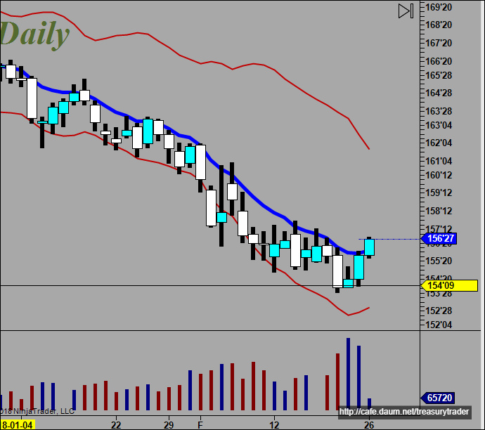
어느쪽으로 매매할것인지 정했으면 이평선 배열상태를 확인하고
늘 그랬던것처럼 눌림목을 기다림
1차 매매
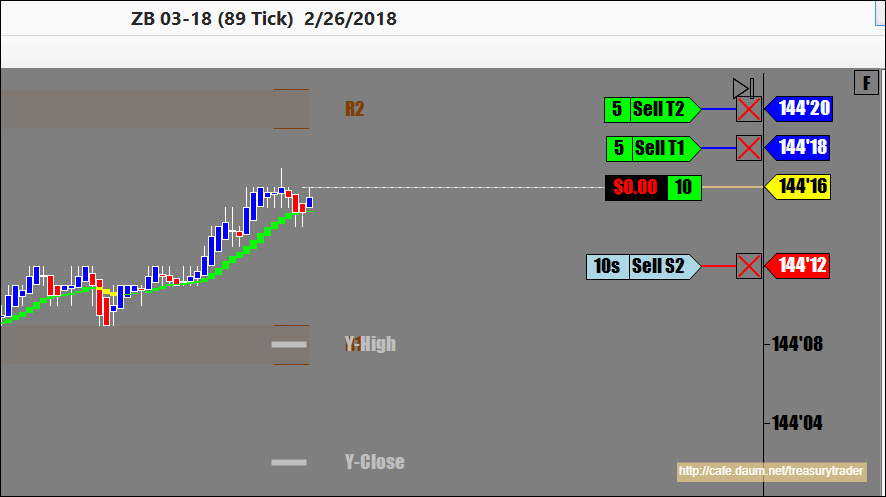
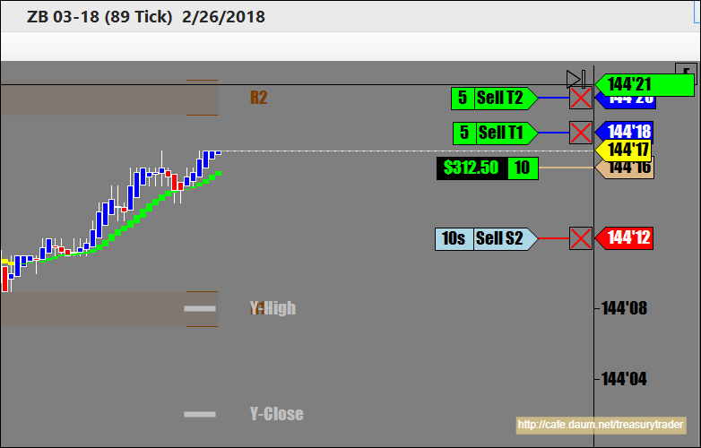
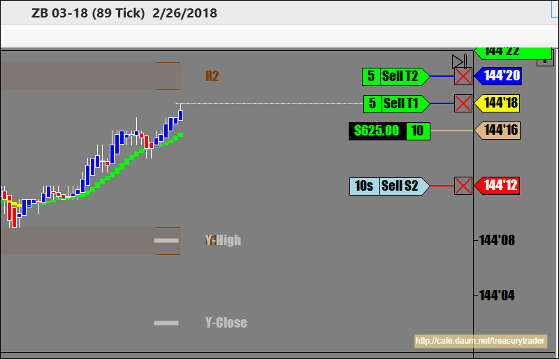
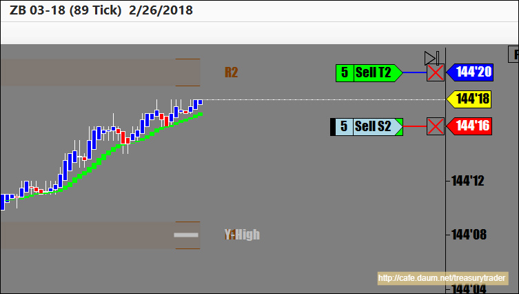
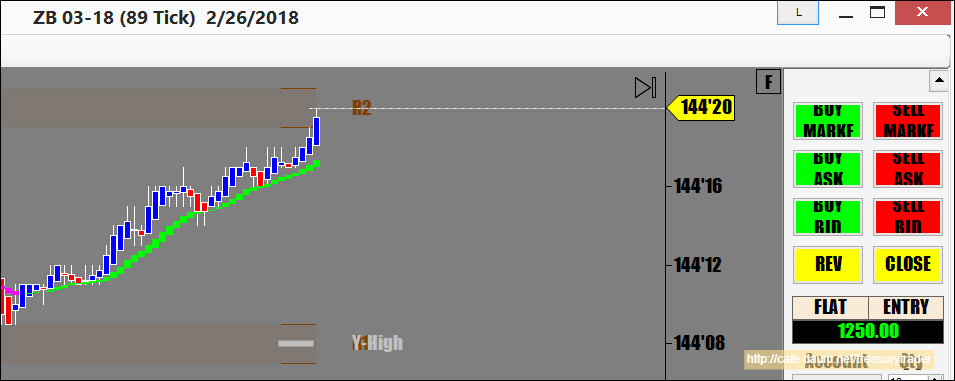
2차매매
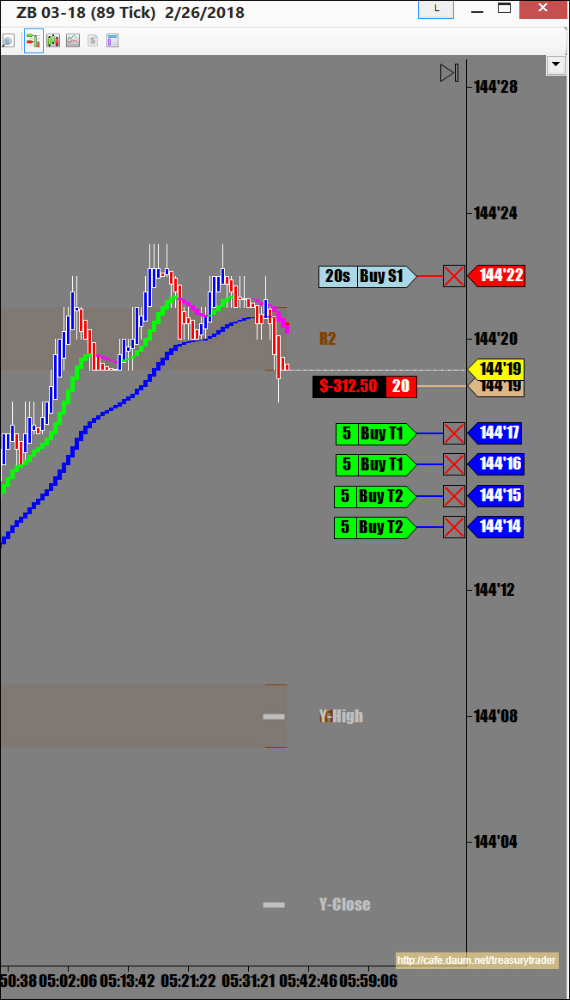
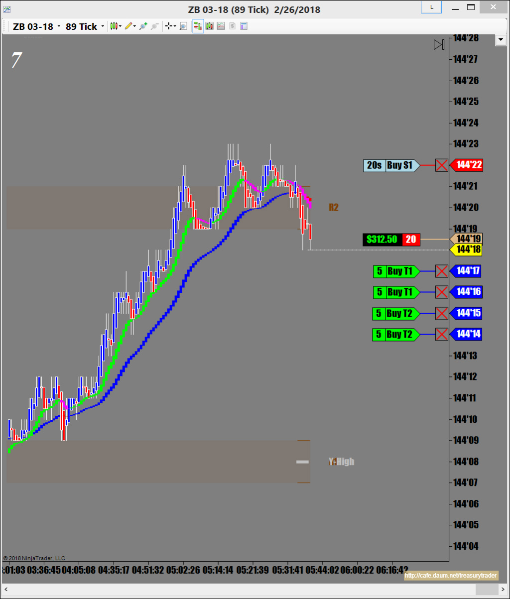
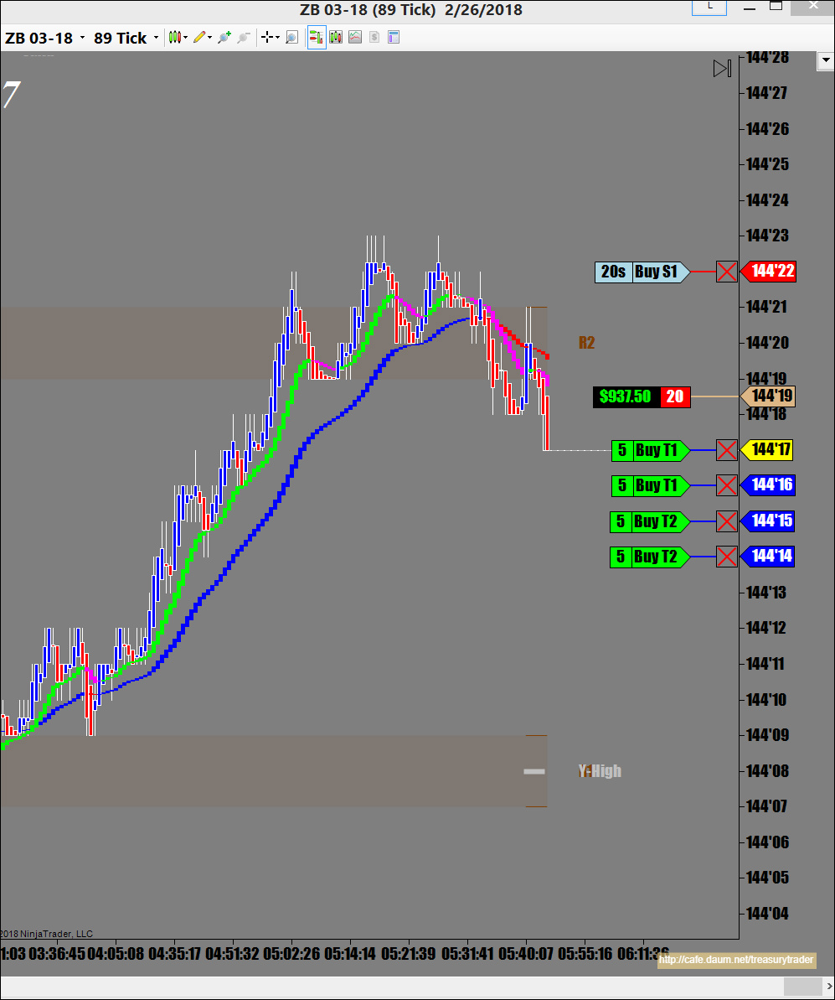
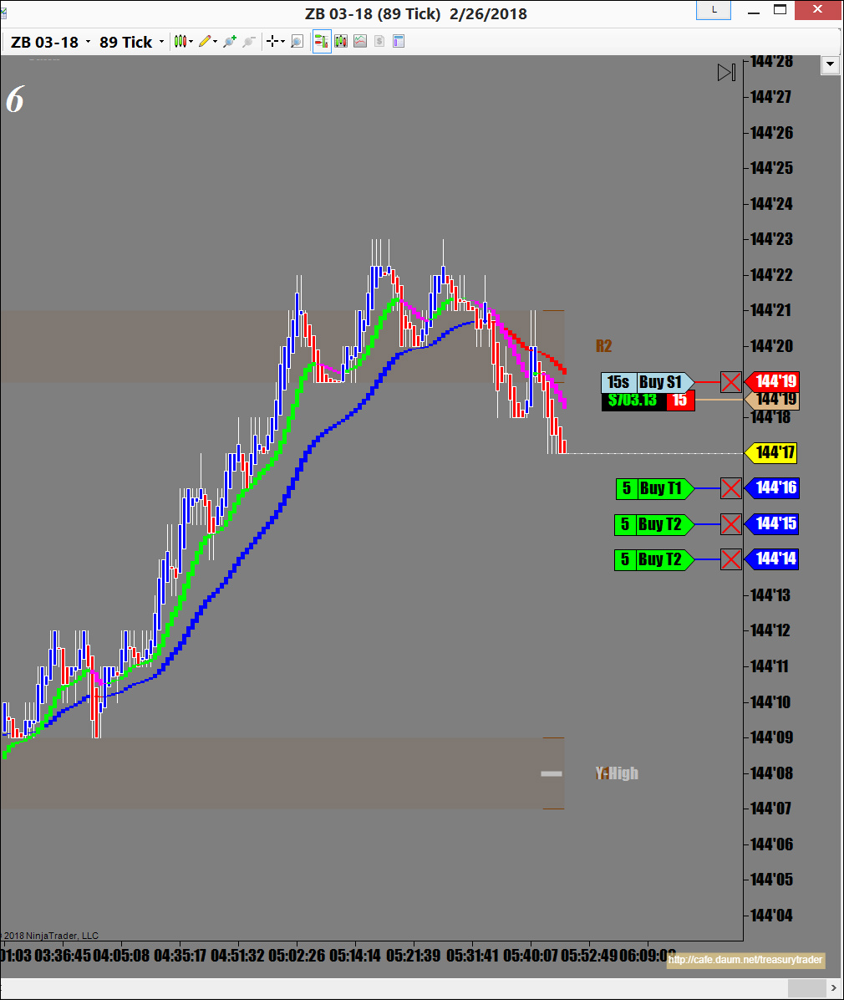
89일선까지 가다가 멈추길래 모두 청산
그후로는 계속 UB 매매
오늘은 ZB 두번 , UB 세번 매매함
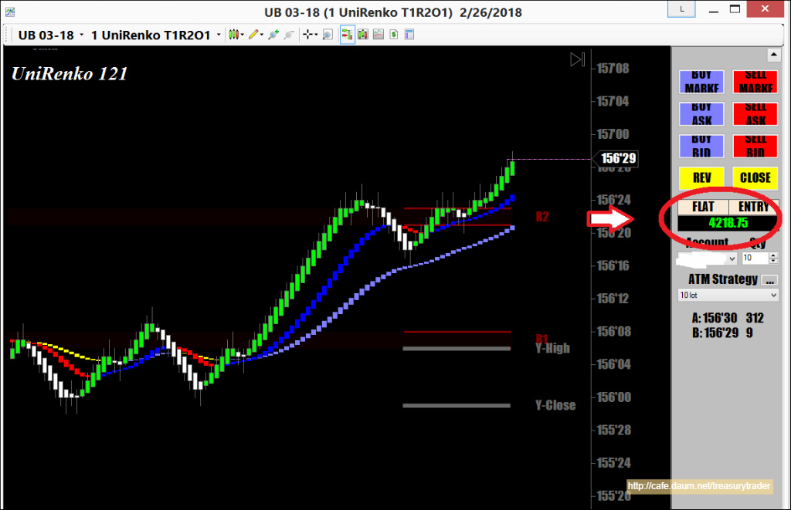